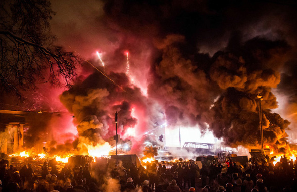

The Shluchim in the Ukraine Are Carrying On
Despite the massive demonstrations, bloodshed, and political upheavals, the shluchim in the Ukraine, particularly in Kiev, tell about the continuation of their mission along with the tension.

What is it like in Kiev now?
“It is quiet at the moment. This is after a week of great tension, shooting, dead, wounded and anarchy. Then, within 24 hours, everything changed from one extreme to another when the president fled Kiev and the demonstrations quieted down. There is still anarchy in the streets and it is dangerous to move around since the police force hasn’t gotten back to normal function, but there are no more shootings and no more casualties.”
LOCATION OF THE CHABAD SHUL
Chabad has a major presence in the Ukraine with dozens of shluchim and their families working in numerous cities and towns and in Kiev, the capitol. The main shul, Brodsky, is located only a few blocks from the area where the demonstrations took place. R’ Moshe Asman is the rav here. Like everyone else, he is nervously following the news and he is planning what to do in the event that things get out of control.
R’ Asman describes what has been going on:
“The center of the demonstrations was only a few hundred meters away from the shul. We kept hearing shooting and the ambulances coming to the area. At a certain point, there was a real fear that a bloody civil war would break out. We know from our history how civil wars end, and it’s very scary. No wonder Chazal in Avos say to pray for the welfare of the government, for if not for its intimidation people would swallow one another alive. There was total chaos here and everyone did as he pleased. Now, we are finally breathing a sigh of relief and hoping that things will stabilize and the police will be back.
“When this first began, the situation was really bleak. Now, people are afraid of what the future will bring. It doesn’t seem as though the two sides are interested in quieting the tensions, which is why there is fear of civil war. The Ukraine has seen this before, and the price in blood was steep.
“The Ukraine is going through tough times which will leave their mark for a long time to come. After a hundred demonstrators were killed, people were terrified. There were long lines at the gas stations, and people emptied the stores of food. Credit cards did not work, the banking system crashed and there were rumors that exit and entry to the city were sealed off and that there would no longer be electricity.”
Where are you now?
“I am at home, which is located opposite the main shul. We heard the shooting from here as well as the hooligans running loose. It was definitely dangerous, and to a certain extent it is still dangerous to walk around the streets since bands of ruffians are starting up with passersby, robbing them, and continuing on their way.”
What is happening in your shul?
“Until now we tried to maintain the schedule of t’fillos, despite the emergency situation. Obviously, I’m not talking about the usual activities. The learning in the yeshiva continues, the minyanim in shul did not stop, and the children continued going to school.
“On Tuesday (February 18, 2014) we did not have Maariv at the shul, for the first time, because it was too dangerous and everyone was under curfew and couldn’t come.
“The talmidim in yeshiva were transferred to another, safer area, and we drove home the elderly men who came to daven and learn. We cannot take chances that, G-d forbid, something will happen to anyone. But volunteers continued coming to shul in order to distribute food to the elderly and lonely who are in a very tough situation, because they cannot take care of themselves and there is no one who cares about them other than Chabad.”
Are you thinking of leaving?
“I recommended to all the families here that at least the women and children should leave the country at the earliest opportunity, or at least leave the city, since there is no reason to continue endangering themselves, and also because the psychological pressure and fear are no good for anyone. The Israeli embassy issued a general instruction to remain indoors and the embassy itself is operating on a limited basis. Other embassies, like the Canadian and British embassies, closed.
“I, on the other hand, do not consider leaving since I am here on the Rebbe’s shlichus and rely on the meshaleiach that nothing bad will happen to me. I wrote to the Rebbe a number of times and asked for a bracha for myself and for all the Jews in the city. Boruch Hashem, I have received wonderful brachos, so I am calm.”
PRIVATE SECURITY COMPANY
In a conversation that Chabad.info had with R’ Yosef Yitzchok Asman, he expressed some reservation about the fact that the demonstrators are anti-Semites.
“Officially, there has been no anti-Semitism in the demonstrations. This is despite the fact that the demonstrators were from Western Ukraine, an area known for anti-Semitism. When the events first began, I saw demonstrators with shirts that had anti-Semitic slogans on them. But then that stopped. The demonstrators, who want to garner worldwide support, don’t want to have themselves depicted as anti-Semites, and they only speak about justice and similar slogans. But there is no guarantee that the situation will remain as such, in the event that the demonstrators will be forcibly dispersed and they will feel put up against the wall.”
What do you consider the main concern?
“Since the shul is right near the where the demonstrators congregated, we are afraid that if they demonstrate and are forcibly dispersed by the police, that they will be pushed in the direction of the shul and will vent their anger on us.”
Have you spoken to the police about this?
“Of course – as soon as the demonstrations began. But the police have more urgent things to take care of these days than that, and they didn’t bother to get back to us and to take care of our security. Having no choice, the community hired the services of a professional security company that placed armed guards at the doorway of the shul and around it, as well as at the entrance to the Jewish school. They also have sixty armed guards ready in the event of any emergency.
“We also spoke with the Israeli embassy in order to obtain guidance. I spoke with the security chief who maintains this is a dangerous situation. Since my wife is here as a representative of the Israeli Education Ministry, he recommended that we be ready in case she will have to be swiftly sent back to Eretz Yisroel.”
R’ Yosef Yitzchok Asman was in the middle of giving a shiur in the office of some businessmen when news came of tens of thousands of people demonstrating, which turned violent with dozens of dead and hundreds of wounded. All the participants of the shiur got up and left. “Whoever was able to, bought a ticket for Eretz Yisroel. Even those who could not leave sent their wives and children out of the country.”
ANSWERS FROM THE REBBE: THERE WILL BE MIRACLES
R’ Moshe Asman affirms, “Our main concern is of a state of anarchy and civil war. In a situation like that, you cannot know who will fall victim to the bloodthirsty hooligans. Although neither side – not the police nor the demonstrators – are displaying any anti-Semitism, Jews are afraid. I have heard of inmates being released from jail and joining the demonstrators.”
What does the Rebbe say?
“I wrote to the Rebbe but opened to a personal answer and not an answer that pertains to the general situation. My oldest daughter and daughter-in-law wrote to the Rebbe after I suggested that they leave the country with their children. They both opened to amazing answers from which we understood that everything will be all right and there will be miracles and wonders. After seeing this, they refused to leave Kiev.
“In fact, we had a big miracle of ‘V’nahapoch Hu’ last week [the week prior to the interview]. The situation last week was bad and it did not seem as though it would change. It was not reasonable to expect the situation to quiet down after months of demonstrations. Then suddenly, all was quiet, and the situation did change.”
What are the shluchim in Kiev doing for the Jews of the city?
“Not much could be done in recent days. We stopped activities because it was dangerous to walk in the streets. No tourists came to the kosher restaurant we run; everyone left.
“Despite the situation, our volunteers continued going around to the homes of people who receive hot meals from us every day and brought them food and joy. Just today, my son Yosef Yitzchok brought food to a woman in the community who is celebrating her 100th birthday today.
“It is interesting that among the demonstrators there were many Jews, some of whom daven in our shul. One of them even brought a mobile radio which is connected to the leaders of the demonstrations; he told us that if there were any people who tried to take advantage of the situation to start up with us, we should report to them immediately and a unit of demonstrators would come to protect the shul.”
How was Shabbos?
“We were unsure what the future would bring, but we welcomed the Shabbos with the belief that we are not alone and we are being watched from Above. I thought that people wouldn’t come to shul. To my great surprise, many people came despite the danger on the streets.
“Shabbos morning I woke to the sound of shooting, but I saw nothing out of the ordinary on the street. We took precautions and had a wonderful Shabbos with guests and the feeling that it was all for the good, that in this month of joy all worrisome things would be transformed to goodness and bracha.”
What’s next?
“The situation remains unclear. The streets are empty and the demonstrators are in control of buildings in the city. Jews always need to take care; they are a target in times of crisis.”
R’ Yosef Yitzchok Asman: “We are not preparing to leave the shlichus, of course, but we are keeping a low profile in order not to stand out. Our hope and prayer is that the upheavals end quickly as the Rebbe said in a sicha about revolutions taking place in the world without almost no bloodshed.”
R’ Moshe Asman: “The important thing is that the Rebbe’s shluchim remain at their posts. We continue to work until the entire world is ready for Geula.”
WEDDING MOVED TO ERETZ YISROEL
R’ Yonasan Markovitch, one of the shluchim in Kiev, was planning a big wedding for his daughter. It was going to be held in the main stadium of Kiev with the participation of public figures, Knesset members and rabbanim from all over Russia and Eretz Yisroel.
The wedding date was planned long before the uprising. As the demonstrations grew, more and more people urged him to postpone the wedding for a quieter time.
“Of course, we did not want to postpone the wedding. At first, we were going to stick to our plans and make the wedding in Kiev despite the tension. But after being contacted by ministers, members of Parliament and the Israeli embassy, we decided to move the wedding to Eretz Yisroel. This was after consulting with the local police that were supposed to provide security for the event. We did not want to take a chance.
“It was very hard because we had to arrange the wedding all over again, within a week, but we did it and it was wonderful, Boruch Hashem.”
THE ETERNAL COVENANT
When the demonstrations first began, over a month ago, hooligans began menacing people in the streets of Kiev. Many of the demonstrators gathered in the main square. The Ukrainian government announced that they would be forcibly dispersing the demonstrators. Police were even permitted to shoot at demonstrators if necessary.
The center of the city was smoky from tires set on fire. All offices and restaurants in the center of the city were closed.
In the central shul, Brodsky, led by R’ Moshe Reuven Asman, they began planning in anticipation of the unfolding events. R’ Asman stepped up the security at all Jewish institutions. He hosted a special delegation of senators from the US who came to visit the shul to discuss the situation and recent violence against Jews.
As a spiritual response to what was going on, three brissin were held in the shul, with the oldest among them a man of seventy! Their names are Yosef, Dovid, and Zev.
Mordechaisegal. "The Shluchim in the Ukraine Are Carrying On." Beis Moshiach, no. 918 (March 4, 2014).